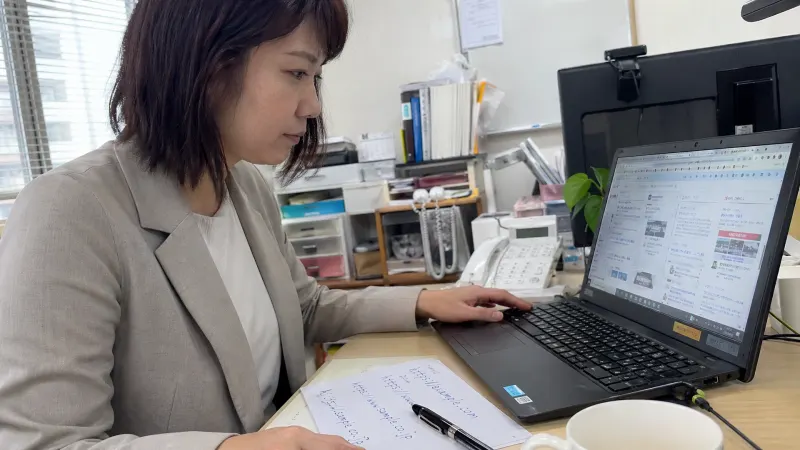
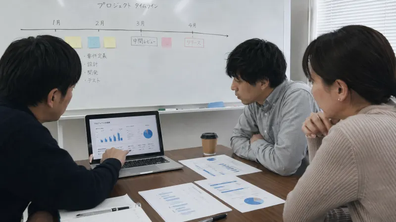

ご支援事例
「半社員型」デジタル支援を通じて、様々な業界の企業様が課題を乗り越え、成果を出されています。
近い事例を見たあと、支援内容まで確認できます
事例一覧は、AI活用・業務効率化の具体例を見る場所です。相談に近い方は、下の課題別ページから支援範囲や進め方も確認できます。

従業員12名・中国地域の鉄道貨物会社 ─ 運行記録のデジタル化で安全管理80%改善
中国地域の鉄道貨物会社が、運行記録の紙台帳を写真・音声入力・自動分類に置き換えた事例。月20時間の集計作業を3時間に短縮し、事故予兆の発見数も3倍に改善。

従業員18名・関東の金属加工業──月3件あった給与計算ミスがゼロになった話
勤務形態がバラバラな金属加工業の総務担当が、AIで給与計算を自動化した事例

【従業員12名・スポーツ用品店】500名の顧客履歴をAIに読ませたら、リピート率が35%→49%に上がった話
東北地方のスポーツ用品専門店（従業員12名・販売担当）が、GPTsカスタムAIで顧客フォローを自動化。リピート率40%向上、月間リピート売上150万→210万円。
従業員20名の中国ネイルサロンがGoogleフォーム+GAS活用で業務効率50%向上
ネイルサロンが50%の業務効率化を実現。Googleフォーム+GAS+ChatGPTの組み合わせで予約管理・顧客管理の課題を解決し、リピート率を大幅改善した成功事例。

新人が「わからない用語」で躓かない。研修動画からAIが用語集を自動作成
社内研修動画をGeminiに読み込ませるだけで専門用語集を自動生成。新人の理解度向上と教育担当者の負担軽減を同時に実現した事例をご紹介。

週次の口コミレポートを自動生成。ネット上の評判調査が4時間→30分に
GeminiのDeepResearch機能でネット上の口コミを網羅的に調査・分析。週次報告レポートの作成時間を87%削減した事例をご紹介。

レポート作成が4時間から30分に。AIリサーチ活用で調査業務を劇的効率化
市場調査や競合分析のレポート作成に毎回4時間以上かかっていた企業が、GeminiのDeep Research機能を活用して作業時間を87%削減した事例をご紹介。

Webサイト調査が10分の1に。NotebookLMで情報収集を劇的効率化
競合調査や市場リサーチでWebサイトを何十件も確認していた作業が、NotebookLMの活用で大幅に効率化。情報収集時間を90%削減した事例をご紹介。

NotebookLMで法令参照を爆速化 - 15名製造業が月10時間→2時間に短縮した方法
NotebookLMでWebサイトの法令・ガイドライン参照を爆速化。15名製造業が法令遵守業務を月10時間から2時間に短縮した実践事例をご紹介。

NotebookLMで施策振り返りを効率化！過去の成功・失敗パターンを分析
NotebookLMを活用して過去の施策資料を分析し、効果的な振り返りを行う方法。複数の施策を横断的に比較分析し、次の施策に活かした事例を解説します。

出欠確認・投票結果を秒速で集計。NotebookLM画像認識でスタンプ数え作業が不要に
NotebookLMの画像認識機能を活用してSlackスタンプ（絵文字リアクション）の集計を自動化。目視確認が不要になり、集計作業が数秒で完了する方法を解説します。

Slackスタンプでチームの空気を可視化。NotebookLMで感情傾向を分析
Slackのリアクションスタンプデータを活用し、チームの感情やエンゲージメントを可視化。NotebookLMで傾向分析を行った中小企業の事例。
自社ならどこから改善できるか、30分で整理します。
業界や規模が違っても、業務の詰まり方には共通点があります。現在の運用を伺い、最初に着手すべき改善ポイントをご提案します。